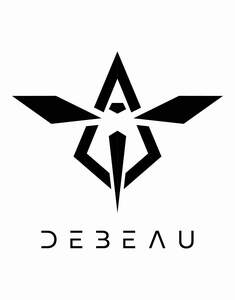

Trade Mark Journal No.2025/029 18 July 2025
UK00004226790 30 June 2025 (18,24,25,28,42)

- Class 18
- Holdalls for sports clothing; Bags for sports clothing; Sports bags; Bags for sports; All-purpose sports bags; Sports packs; Holdalls; Sports [Bags for -]; Sport bags; All purpose sports bags; Duffel bags; Duffle bags; Rucksacks; Backpacks [rucksacks]; Duffel bags for travel; Carry-all bags; Travelling bags [leatherware]; Bumbags; Toiletry bags; Trunks and travelling bags; Luggage bags; Drawstring bags; Tote bags; Backpacks; Small rucksacks; Athletics bags; Wallets; Handbags, purses and wallets; Shoe bags; Shoe bags for travel; Bags; Boot bags; All purpose sport bags; Trunks being luggage; Trunks and suitcases.
- Class 24
- Towels; Bath towels; Bath sheets (towels); Bathroom towels; Beach towels; Tea towels; Kitchen towels; Towels of textiles; Hooded towels; Yoga towels; Golf towels; Large bath towels; Children's towels; Household linen, including face towels; Linens; Textile exercise towels; Bedsheets; Bed linen and blankets; Towels [textile] for the beach; Towels of textile.
- Class 25
- Clothing for sports; Sports clothing; Clothes for sports; Jackets being sports clothing; Sports garments; Articles of sports clothing; Sports clothing [other than golf gloves]; Footwear for sports; Sports footwear; Clothes for sport; Athletic clothing; Sports shirts; Sports jackets; Sports shoes; Sports jerseys and breeches for sports; Sports wear; Clothing; Clothing for gymnastics; Footwear not for sports; Triathlon clothing; Footwear for sport; Footwear for use in sport; Sports jerseys; Leisure clothing; Clothing for cycling; Sports bras; Sports vests; Sports pants; Sports bibs; Jerseys [clothing]; Clothing for leisure wear; Boots for sports; Moisture-wicking sports shirts; Parts of clothing, footwear and headgear; Sports socks; Sport shirts; Golf clothing, other than gloves; Sports singlets; Jackets [clothing]; Visors [clothing]; Sport shoes; Sports headgear [other than helmets]; Athletics footwear; Woolen clothing; Combative sports uniforms; Headbands [clothing]; Headbands for clothing; Knitwear [clothing]; Moisture-wicking sports bras; Leather clothing; Clothing of leather; Leather (Clothing of -); Clothing for wear in judo practices; Ready-to-wear clothing; Dance clothing; Shorts [clothing]; Casual clothing; Moisture-wicking sports pants; Water-resistant clothing; Articles of clothing; Clothing for cyclists; Beach clothing; Gloves [clothing]; Gloves as clothing; Athletic footwear; Clothing for children; Sports over uniforms; Men's clothing; Jackets (Stuff -) [clothing]; Stuff jackets [clothing]; Wristbands [clothing]; Sportswear; Waterproof clothing; Sports caps; Bodies [clothing]; Windproof clothing; Leisurewear; Shoes for leisurewear; Casualwear; Tracksuits; Gymwear; Loungewear; Nightwear; Leisure footwear; Playsuits [clothing]; Beachwear; Men's underwear; Menswear; Gloves for apparel; Swimwear; Sleepwear; Sweat-absorbent underclothing [underwear]; Sweat-absorbent underwear; Leisure wear; Outerwear; Embroidered clothing; Rugby shirts; Ready-made clothing; Knitwear; Rugby shorts; Men's and women's jackets, coats, trousers, vests; Linen clothing; Weatherproof clothing; Rainproof clothing; Pyjamas; Trousers shorts; Rainwear; Plush clothing; Jogging bottoms [clothing]; Casual footwear; Leisure shoes; Gym shorts; Trunks being clothing; Short-sleeved shirts; Casual shirts; Knitted clothing; Casual trousers; Sweatshorts; Leisure suits; Tracksuit bottoms; Sweat-absorbent underclothing; Quilted jackets [clothing]; Athletic uniforms; Collars [clothing]; Short-sleeved T-shirts; Sports caps and hats; Sport coats; Sport stockings; Clothing for men, women and children; Women's clothing; Belts [clothing]; Belts for clothing; Infant clothing; Baseball caps and hats; Caps; Hats; Caps [headwear]; Caps being headwear; Caps with visors; Beanie hats; Knitted caps; Bobble hats; Baseball caps; Bucket caps; Cap visors; Golf caps; Bucket hats; Beanies; Sun hats; Rugby boots; Rugby shoes; Football boots; Soccer boots; Jackets; Soccer shirts; Football shirts; Polo shirts; Sports shirts with short sleeves; Shirts; Sweat shirts; Short-sleeve shirts; Long-sleeved shirts; Knit shirts; T-shirts; Shirts for suits; Collared shirts; Tee-shirts; Vests; Briefs; Briefs [underwear]; Boxer briefs; Underwear; Boxer shorts; Trunks [underwear]; Underwear for women; Women's underwear; Cycling shorts; Cycling pants; Clothing for babies; Baby clothes; Infant wear; Swim wear for children; Clothing for infants.
- Class 28
- Sports equipment; Rugby balls; Soccer balls; Balls for sports; Sports balls.
- Class 42
- Design of clothing, footwear and headgear; Design of clothing accessories.
DEBEAU LIMITED